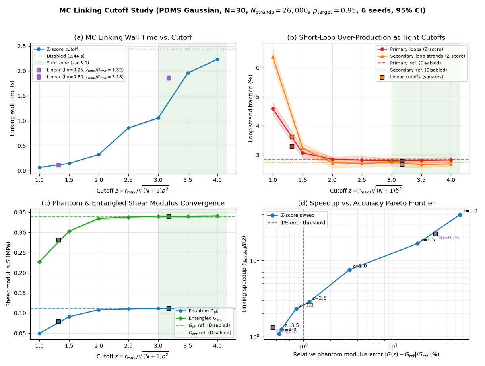
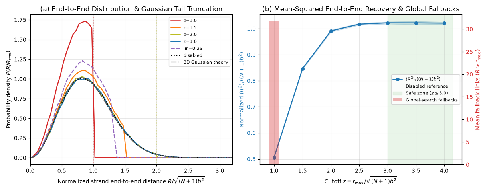
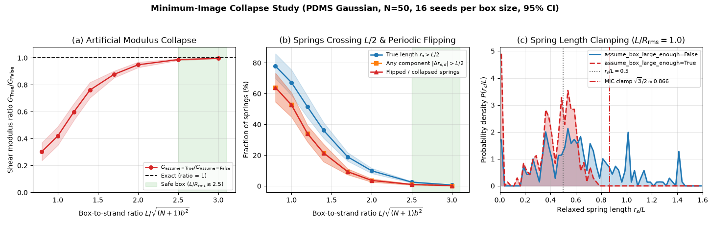
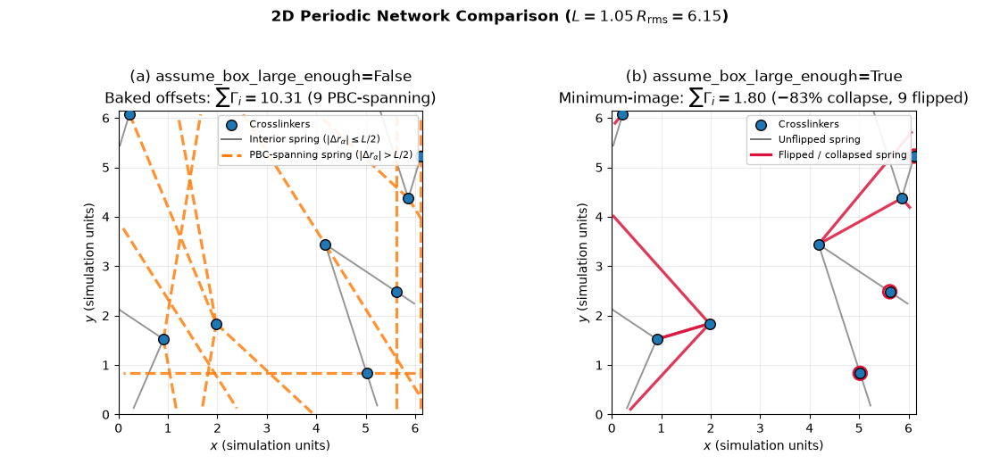

Note
Go to the end to download the full example code.
Algorithmic & PBC Failure Modes: MaxDistanceProvider Bias & assume_box_large_enough¶
Accurate polymer network modeling requires not only physically sound force fields and topologies, but also awareness of two algorithmic shortcuts that trade exactness for speed or implementation simplicity:
Spatial linking cutoffs in
MCUniverseGenerator(MaxDistanceProvider): When end-linking a strand of \(N\) interior beads (\(N_{\text{bonds}} = N + 1\) bonds, mean-squared bond length \(b^2\)), the exact Monte Carlo linker evaluates the 3D Gaussian weight \(w(R) \propto \exp\!\left(-3 R^2 / (2 N_{\text{bonds}} b^2)\right)\) over all available crosslink sites in \(\mathcal{O}(N_{\text{xlinks}})\) time per link (Gusev and Schwarz [GS19], Bernhard et al. [BSG25]). Configuring a neighbour-list cutoff viause_zscore_max_distance()(\(r_{\max} = z \sqrt{N_{\text{bonds}} \, \text{in\_sqrt\_multiplier}}\)) oruse_linear_max_distance()(\(r_{\max} = m \, N_{\text{bonds}}\)) accelerates linking substantially, but an overly aggressive cutoff truncates the Gaussian end-to-end tail, inflates primary and secondary loop formation, and depresses both phantom and entangled shear moduli.Minimum-image wrapping in
MEHPSimulator(assume_box_large_enough): As documented in Assumptions, MEHP represents entire polymer strands as entropic springs (Gusev [Gus19], Bernhard and Gusev [BG25]). Withassume_box_large_enough=False(the safe default), periodic box offsets \(\mathbf{o}_s\) are baked from the bead-by-bead chain contour so strands spanning more than \(L/2\) remain elastically active. Settingassume_box_large_enough=Trueapplies the minimum-image convention on every force evaluation, clamping spring lengths to \(r_s \le \sqrt{3}\,L/2\), flipping springs across periodic boundaries, collapsing box-spanning chains, and causing an artificial collapse of the shear modulus \(G\).
Using realistic PDMS Gaussian bead-spring parameters
(GAUSSIAN,
Gusev and Schwarz [GS22]), we quantify both failure modes and establish
safe operating thresholds (\(z \gtrsim 3.0\) with
in_sqrt_multiplier=<b^2>, and \(L / \sqrt{(N+1)b^2} \gtrsim 2.5\text{--}3.0\)
or assume_box_large_enough=False).
from pathlib import Path
import sys
from typing import Any, Dict, Tuple
import matplotlib.pyplot as plt
import numpy as np
if "__file__" in globals():
_examples_dir = str(Path(__file__).resolve().parents[1])
_ng_dir = str(Path(__file__).resolve().parent)
for _p in (_examples_dir, _ng_dir):
if _p not in sys.path:
sys.path.insert(0, _p)
from _example_cache import ( # noqa: E402
format_benchmark_footnote,
get_example_cache_path,
load_or_compute_cache,
)
from _mc_pbc_artifacts_runner import ( # noqa: E402
MaxDistanceMode,
build_pbc_aware_network,
extract_pdms_parameters,
run_mc_pbc_artifacts_study,
)
import pylimer_tools_cpp as pt # noqa: E402
def _plot_band(
ax: plt.Axes,
x: np.ndarray,
mean: np.ndarray,
ci: np.ndarray,
fmt: str,
color: str,
label: str,
) -> None:
"""Plot ensemble mean with shaded 95% Student's t CI band."""
ax.plot(x, mean, fmt, color=color, linewidth=1.8, markersize=5.5, label=label)
ax.fill_between(x, mean - ci, mean + ci, color=color, alpha=0.18)
def _draw_periodic_segment(
ax: plt.Axes,
p_start: np.ndarray,
vec: np.ndarray,
box_l: float,
color: str,
linewidth: float,
linestyle: str = "-",
alpha: float = 0.85,
zorder: int = 2,
) -> None:
"""Draw a 2D periodic segment inside ``[0, box_l]^2``, splitting at crossings."""
p0 = np.asarray(p_start, dtype=float)
dv = np.asarray(vec, dtype=float)
length = float(np.linalg.norm(dv))
if length < 1e-8:
ax.scatter(
[p0[0]],
[p0[1]],
s=110,
facecolors="none",
edgecolors=color,
linewidths=2.0,
zorder=zorder + 2,
)
return
# Subdivide finely so periodic boundary wraps break cleanly without diagonal artifacts
n_sub = max(2, int(np.ceil(length / (0.04 * box_l))))
ts = np.linspace(0.0, 1.0, n_sub + 1)
pts = np.mod(p0[None, :] + ts[:, None] * dv[None, :], box_l)
seg_start = 0
for k in range(1, len(pts)):
if np.any(np.abs(pts[k] - pts[k - 1]) > 0.5 * box_l):
ax.plot(
pts[seg_start:k, 0],
pts[seg_start:k, 1],
color=color,
linewidth=linewidth,
linestyle=linestyle,
alpha=alpha,
zorder=zorder,
)
seg_start = k
ax.plot(
pts[seg_start:, 0],
pts[seg_start:, 1],
color=color,
linewidth=linewidth,
linestyle=linestyle,
alpha=alpha,
zorder=zorder,
)
Quick API Demo: Calibrating MaxDistanceProvider and assume_box_large_enough¶
Before inspecting the full multi-seed ensemble, we demonstrate the two APIs on
compact PDMS systems. Note that
use_zscore_max_distance() computes
\(r_{\max} = z \sqrt{(N+1)\,\text{in\_sqrt\_multiplier}}\), so passing
in_sqrt_multiplier=<b^2> calibrates \(z\) directly in units of the
strand RMS end-to-end distance \(R_{\text{rms}} = \sqrt{(N+1)b^2}\).
pdms = extract_pdms_parameters()
n_str_demo, n_beads_demo = 400, 30
vol_demo = (n_str_demo * n_beads_demo + n_str_demo // 2) / pdms.bead_density
box_demo = vol_demo ** (1.0 / 3.0)
gen_demo = pt.MCUniverseGenerator(box_demo, box_demo, box_demo)
gen_demo.set_seed(42)
gen_demo.config_nr_of_mc_steps(0)
gen_demo.set_bead_distance(pdms.b)
gen_demo.set_mean_squared_bead_distance(pdms.b2)
gen_demo.add_crosslinkers(n_str_demo // 2, 4)
gen_demo.add_strands(n_str_demo, [n_beads_demo] * n_str_demo)
gen_demo.use_zscore_max_distance(3.0, pdms.b2)
gen_demo.link_strands_to_conversion(0.95)
print(
f"MC demo (z=3.0, in_sqrt_multiplier=b^2={pdms.b2:.3f}): "
f"achieved conversion p = {gen_demo.get_current_crosslinker_conversion():.4f}"
)
# Small-box PBC demo: L = R_rms (strands wrap around periodic boundaries)
r_rms_demo = float(np.sqrt((50 + 1) * pdms.b2))
u_small = build_pbc_aware_network(
box_l=r_rms_demo,
n_beads=50,
n_strands=20,
b2=pdms.b2,
p_target=0.95,
seed=42,
)
sim_safe = pt.MEHPSimulator(u_small, crosslinker_type=2, assume_box_large_enough=False)
sim_mic = pt.MEHPSimulator(u_small, crosslinker_type=2, assume_box_large_enough=True)
sim_safe.run()
sim_mic.run()
g_safe_demo = (
pdms.gamma_to_mpa
* float(np.sum(sim_safe.get_gamma_factors(pdms.r02)))
/ (r_rms_demo**3)
)
g_mic_demo = (
pdms.gamma_to_mpa
* float(np.sum(sim_mic.get_gamma_factors(pdms.r02)))
/ (r_rms_demo**3)
)
print(
f"Small-box PBC demo (L = R_rms = {r_rms_demo:.2f}): "
f"G(assume=False) = {g_safe_demo:.4f} MPa vs. "
f"G(assume=True) = {g_mic_demo:.4f} MPa "
f"(ratio = {g_mic_demo / max(g_safe_demo, 1e-12):.2f})"
)
MC demo (z=3.0, in_sqrt_multiplier=b^2=1.107): achieved conversion p = 0.9500
Small-box PBC demo (L = R_rms = 7.51): G(assume=False) = 0.0904 MPa vs. G(assume=True) = 0.0382 MPa (ratio = 0.42)
Load Precomputed Multi-Seed Ensemble Data¶
The full study evaluates 10 MaxDistanceProvider settings on melt PDMS
networks (\(N = 30\), \(N_{\text{strands}} = 26{,}000\),
\(L / R_{\text{rms}} = 12.1\), 6 seeds) and 8 box sizes
\(L / R_{\text{rms}} \in [0.8, 3.0]\) (16 seeds each) for
assume_box_large_enough. Results are loaded from the precomputed compressed
cache (pass --recompute to regenerate).
cache_path = get_example_cache_path(
"mc_cutoff_and_pbc_artifacts_cache.npz",
example_folder="network_generator",
)
data: Dict[str, Any] = load_or_compute_cache(
cache_path,
run_mc_pbc_artifacts_study,
)
labels = [str(s) for s in data["mc_labels"]]
modes = [MaxDistanceMode(str(s)) for s in data["mc_modes"]]
values = np.asarray(data["mc_values"], dtype=float)
z_idx = np.array([i for i, m in enumerate(modes) if m is MaxDistanceMode.ZSCORE])
lin_idx = np.array([i for i, m in enumerate(modes) if m is MaxDistanceMode.LINEAR])
dis_idx = int([i for i, m in enumerate(modes) if m is MaxDistanceMode.DISABLED][0])
z_vals = values[z_idx]
n_beads_mc = int(data["mc_n_beads"])
r_rms_mc = float(data["mc_r_rms"])
b2_mc = float(data["pdms_b2"])
# Equivalent z = r_max / R_rms for the linear cutoff configurations
lin_z_equiv = values[lin_idx] * (n_beads_mc + 1) / r_rms_mc
Loading cached example data from mc_cutoff_and_pbc_artifacts_cache.npz...
Figure 1: Speed vs. Structural & Elastic Bias in MC Linking¶
At \(z \le 2.0\), the neighbour-list cutoff accelerates linking by
\(7\text{--}44\times\), but introduces severe structural bias:
primary and secondary loop fractions jump sharply, and both phantom
(\(G_{\text{ph}}\)) and entangled (\(G_{\text{ent}}\)) shear moduli
drop dramatically. For \(z \ge 3.0\), structural and elastic properties
are statistically indistinguishable from disable_max_distance() while still
providing a \(\sim 2.3\times\) speedup (which scales even further with
system size \(N_{\text{strands}}\)).
fig, axes = plt.subplots(2, 2, figsize=(12.2, 9.2))
ax_t, ax_loop, ax_g, ax_pareto = axes.ravel()
# (a) Linking wall time vs z
_plot_band(
ax_t,
z_vals,
data["mc_wall_time_mean"][z_idx],
data["mc_wall_time_ci"][z_idx],
"o-",
"tab:blue",
"Z-score cutoff",
)
ax_t.axhline(
float(data["mc_wall_time_mean"][dis_idx]),
color="black",
linestyle="--",
linewidth=1.5,
label=f"Disabled ({data['mc_wall_time_mean'][dis_idx]:.2f} s)",
)
for idx_l, z_eq in zip(lin_idx, lin_z_equiv):
ax_t.errorbar(
z_eq,
float(data["mc_wall_time_mean"][idx_l]),
yerr=float(data["mc_wall_time_ci"][idx_l]),
fmt="s",
color="tab:purple",
markersize=7,
capsize=3,
label=f"Linear ({labels[idx_l]}, $r_{{\\max}}/R_{{\\mathrm{{rms}}}}={z_eq:.2f}$)",
)
ax_t.axvspan(
3.0, 4.15, color="tab:green", alpha=0.10, label="Safe zone ($z \\geq 3.0$)"
)
ax_t.set_xlabel(r"Cutoff $z = r_{\max} / \sqrt{(N+1)b^2}$")
ax_t.set_ylabel("Linking wall time (s)")
ax_t.set_title("(a) MC Linking Wall Time vs. Cutoff")
ax_t.grid(True, alpha=0.3)
ax_t.legend(fontsize=8.2, loc="upper left")
# (b) Primary and secondary loop fractions vs z
_plot_band(
ax_loop,
z_vals,
100.0 * data["mc_prim_frac_mean"][z_idx],
100.0 * data["mc_prim_frac_ci"][z_idx],
"o-",
"tab:red",
"Primary loops (Z-score)",
)
_plot_band(
ax_loop,
z_vals,
100.0 * data["mc_sec_frac_mean"][z_idx],
100.0 * data["mc_sec_frac_ci"][z_idx],
"^-",
"tab:orange",
"Secondary loop strands (Z-score)",
)
ax_loop.axhline(
100.0 * float(data["mc_prim_frac_mean"][dis_idx]),
color="tab:red",
linestyle="--",
alpha=0.7,
label="Primary ref. (Disabled)",
)
ax_loop.axhline(
100.0 * float(data["mc_sec_frac_mean"][dis_idx]),
color="tab:orange",
linestyle=":",
alpha=0.85,
label="Secondary ref. (Disabled)",
)
ax_loop.scatter(
lin_z_equiv,
100.0 * data["mc_prim_frac_mean"][lin_idx],
marker="s",
s=45,
color="tab:red",
edgecolor="black",
zorder=5,
)
ax_loop.scatter(
lin_z_equiv,
100.0 * data["mc_sec_frac_mean"][lin_idx],
marker="s",
s=45,
color="tab:orange",
edgecolor="black",
zorder=5,
label="Linear cutoffs (squares)",
)
ax_loop.axvspan(3.0, 4.15, color="tab:green", alpha=0.10)
ax_loop.set_xlabel(r"Cutoff $z = r_{\max} / \sqrt{(N+1)b^2}$")
ax_loop.set_ylabel("Loop strand fraction (%)")
ax_loop.set_title("(b) Short-Loop Over-Production at Tight Cutoffs")
ax_loop.grid(True, alpha=0.3)
ax_loop.legend(fontsize=8.2, loc="upper right")
# (c) Phantom and entangled shear moduli vs z
_plot_band(
ax_g,
z_vals,
data["mc_g_ph_mean"][z_idx],
data["mc_g_ph_ci"][z_idx],
"o-",
"tab:blue",
r"Phantom $G_{\mathrm{ph}}$",
)
_plot_band(
ax_g,
z_vals,
data["mc_g_ent_mean"][z_idx],
data["mc_g_ent_ci"][z_idx],
"D-",
"tab:green",
r"Entangled $G_{\mathrm{ent}}$",
)
ax_g.axhline(
float(data["mc_g_ph_mean"][dis_idx]),
color="tab:blue",
linestyle="--",
alpha=0.7,
label=r"$G_{\mathrm{ph}}$ ref. (Disabled)",
)
ax_g.axhline(
float(data["mc_g_ent_mean"][dis_idx]),
color="tab:green",
linestyle="--",
alpha=0.7,
label=r"$G_{\mathrm{ent}}$ ref. (Disabled)",
)
ax_g.scatter(
lin_z_equiv,
data["mc_g_ph_mean"][lin_idx],
marker="s",
s=45,
color="tab:blue",
edgecolor="black",
zorder=5,
)
ax_g.scatter(
lin_z_equiv,
data["mc_g_ent_mean"][lin_idx],
marker="s",
s=45,
color="tab:green",
edgecolor="black",
zorder=5,
)
ax_g.axvspan(3.0, 4.15, color="tab:green", alpha=0.10)
ax_g.set_xlabel(r"Cutoff $z = r_{\max} / \sqrt{(N+1)b^2}$")
ax_g.set_ylabel("Shear modulus $G$ (MPa)")
ax_g.set_title("(c) Phantom & Entangled Shear Modulus Convergence")
ax_g.grid(True, alpha=0.3)
ax_g.legend(fontsize=8.2, loc="lower right")
# (d) Speedup vs relative phantom modulus error Pareto plot
err_pct = 100.0 * data["mc_g_ph_rel_err_mean"]
speedup = data["mc_speedup_mean"]
ax_pareto.plot(
err_pct[z_idx],
speedup[z_idx],
"o-",
color="tab:blue",
linewidth=1.8,
markersize=6.5,
label="Z-score sweep",
)
for i in z_idx:
ax_pareto.annotate(
labels[i],
(err_pct[i], speedup[i]),
textcoords="offset points",
xytext=(6, 4),
fontsize=8.5,
)
for i in lin_idx:
ax_pareto.scatter(
err_pct[i],
speedup[i],
marker="s",
s=55,
color="tab:purple",
edgecolor="black",
zorder=5,
)
ax_pareto.annotate(
labels[i],
(err_pct[i], speedup[i]),
textcoords="offset points",
xytext=(6, -10),
fontsize=8.5,
color="tab:purple",
)
ax_pareto.axvline(
1.0, color="tab:green", linestyle="--", linewidth=1.3, label="1% error threshold"
)
ax_pareto.set_xscale("log")
ax_pareto.set_yscale("log")
ax_pareto.set_xlabel(
r"Relative phantom modulus error $|G(z) - G_{\mathrm{ref}}| / G_{\mathrm{ref}}$ (%)"
)
ax_pareto.set_ylabel(r"Linking speedup $t_{\mathrm{disabled}} / t(z)$")
ax_pareto.set_title("(d) Speedup vs. Accuracy Pareto Frontier")
ax_pareto.grid(True, which="both", alpha=0.25)
ax_pareto.legend(fontsize=8.5, loc="upper left")
fig.suptitle(
f"MC Linking Cutoff Study (PDMS Gaussian, N={n_beads_mc}, "
f"$N_{{\\mathrm{{strands}}}}={int(data['mc_n_strands']):,}$, "
f"$p_{{\\mathrm{{target}}}}={float(data['mc_target_conversion']):.2f}$, "
f"{int(data['mc_n_seeds'])} seeds, 95% CI)",
fontsize=12.5,
fontweight="bold",
)
fig.tight_layout(rect=(0.0, 0.0, 1.0, 0.96))
plt.show()

Figure 2: Gaussian End-to-End Tail Truncation & Fallback Behavior¶
Plotting the realized strand end-to-end distribution \(P(R / R_{\text{rms}})\)
directly reveals the mechanism behind the modulus depression: tight cutoffs
slice off the 3D Maxwell–Boltzmann Gaussian tail at \(R / R_{\text{rms}} = z\).
Note that achieved crosslinker conversion still reaches
\(p = 0.950\) even at \(z = 1.0\) because
MCUniverseGenerator falls back to an unrestricted
global scan whenever a local cutoff sphere contains zero free crosslink sites
(visible as a small number of fallback links beyond \(r_{\max}\)).
fig, (ax_pdf, ax_r2) = plt.subplots(1, 2, figsize=(12.2, 4.8))
r_edges = np.asarray(data["mc_r_edges"], dtype=float)
r_centers = 0.5 * (r_edges[:-1] + r_edges[1:])
r_grid = np.linspace(0.0, float(r_edges[-1]), 300)
# Exact 3D Maxwell-Boltzmann distribution for R_tilde = R / sqrt((N+1) b^2)
mb_pdf = (
4.0 * np.pi * (3.0 / (2.0 * np.pi)) ** 1.5 * (r_grid**2) * np.exp(-1.5 * r_grid**2)
)
show_specs: Tuple[Tuple[str, str, str], ...] = (
("z=1.0", "tab:red", "-"),
("z=1.5", "tab:orange", "-"),
("z=2.0", "tab:olive", "-"),
("z=3.0", "tab:blue", "-"),
("lin=0.25", "tab:purple", "--"),
("disabled", "black", ":"),
)
label_to_idx = {lbl: i for i, lbl in enumerate(labels)}
for lbl, col, ls in show_specs:
idx_s = label_to_idx[lbl]
ax_pdf.plot(
r_centers,
data["mc_r_hist_mean"][idx_s],
color=col,
linestyle=ls,
linewidth=1.8,
label=lbl,
)
ax_pdf.plot(
r_grid,
mb_pdf,
color="0.35",
linestyle="-.",
linewidth=1.6,
label="3D Gaussian theory",
)
for z_cut, col in ((1.0, "tab:red"), (1.5, "tab:orange"), (2.0, "tab:olive")):
ax_pdf.axvline(z_cut, color=col, linestyle=":", alpha=0.55, linewidth=1.1)
ax_pdf.set_xlabel(r"Normalized strand end-to-end distance $R / \sqrt{(N+1)b^2}$")
ax_pdf.set_ylabel(r"Probability density $P(R / R_{\mathrm{rms}})$")
ax_pdf.set_title("(a) End-to-End Distribution & Gaussian Tail Truncation")
ax_pdf.set_xlim(0.0, 3.2)
ax_pdf.grid(True, alpha=0.3)
ax_pdf.legend(fontsize=8.2, loc="upper right")
# (b) <R^2>/((N+1)b^2) and fallback count vs z
_plot_band(
ax_r2,
z_vals,
data["mc_r2_norm_mean"][z_idx],
data["mc_r2_norm_ci"][z_idx],
"o-",
"tab:blue",
r"$\langle R^2 \rangle / ((N+1)b^2)$",
)
ax_r2.axhline(
float(data["mc_r2_norm_mean"][dis_idx]),
color="black",
linestyle="--",
linewidth=1.3,
label="Disabled reference",
)
ax_r2.axvspan(
3.0, 4.15, color="tab:green", alpha=0.10, label="Safe zone ($z \\geq 3.0$)"
)
ax_r2.set_xlabel(r"Cutoff $z = r_{\max} / \sqrt{(N+1)b^2}$")
ax_r2.set_ylabel(r"Normalized $\langle R^2 \rangle / ((N+1)b^2)$", color="tab:blue")
ax_r2.tick_params(axis="y", labelcolor="tab:blue")
ax_r2.set_title(r"(b) Mean-Squared End-to-End Recovery & Global Fallbacks")
ax_r2.grid(True, alpha=0.3)
ax_fb = ax_r2.twinx()
ax_fb.bar(
z_vals,
data["mc_fallback_count_mean"][z_idx],
width=0.18,
color="tab:red",
alpha=0.35,
label="Global-search fallbacks",
)
ax_fb.set_ylabel("Mean fallback links ($R > r_{\\max}$)", color="tab:red")
ax_fb.tick_params(axis="y", labelcolor="tab:red")
lines1, labels1 = ax_r2.get_legend_handles_labels()
lines2, labels2 = ax_fb.get_legend_handles_labels()
ax_r2.legend(lines1 + lines2, labels1 + labels2, fontsize=8.2, loc="center right")
fig.tight_layout()
plt.show()

Figure 3: Minimum-Image Collapse vs. Box Size (assume_box_large_enough)¶
When a periodic simulation box is small relative to the strand RMS size
\(R_{\text{rms}} = \sqrt{(N+1)b^2}\), equilibrium strands legitimately
span more than \(L/2\) along one or more Cartesian axes. With
assume_box_large_enough=False, MEHPSimulator
preserves the true baked periodic offsets \(\mathbf{o}_s\). With
assume_box_large_enough=True, minimum-image wrapping flips every spring
with \(|\Delta r_{s,\alpha}| > L/2\), clamps all spring lengths to
\(r_s / L \le \sqrt{3}/2 \approx 0.866\), collapses box-spanning chains
to zero length, and causes up to \(\sim 70\%\) artificial modulus loss at
\(L / R_{\text{rms}} = 0.8\).
alphas = np.asarray(data["pbc_alphas"], dtype=float)
rl_edges = np.asarray(data["pbc_rl_edges"], dtype=float)
rl_centers = 0.5 * (rl_edges[:-1] + rl_edges[1:])
hist_alpha = float(data["pbc_hist_alpha"])
fig, (ax_ratio, ax_flip, ax_hist) = plt.subplots(1, 3, figsize=(14.5, 4.6))
# (a) Modulus collapse ratio
_plot_band(
ax_ratio,
alphas,
data["pbc_g_ratio_mean"],
data["pbc_g_ratio_ci"],
"o-",
"tab:red",
r"$G_{\mathrm{assume=True}} / G_{\mathrm{assume=False}}$",
)
ax_ratio.axhline(
1.0, color="black", linestyle="--", linewidth=1.3, label="Exact (ratio = 1)"
)
ax_ratio.axvspan(
2.5,
3.1,
color="tab:green",
alpha=0.12,
label=r"Safe box ($L/R_{\mathrm{rms}} \gtrsim 2.5$)",
)
ax_ratio.set_xlabel(r"Box-to-strand ratio $L / \sqrt{(N+1)b^2}$")
ax_ratio.set_ylabel(r"Shear modulus ratio $G_{\mathrm{True}} / G_{\mathrm{False}}$")
ax_ratio.set_title("(a) Artificial Modulus Collapse")
ax_ratio.set_ylim(0.0, 1.08)
ax_ratio.grid(True, alpha=0.3)
ax_ratio.legend(fontsize=8.2, loc="lower right")
# (b) Fraction of springs exceeding L/2 and flipped springs
_plot_band(
ax_flip,
alphas,
100.0 * data["pbc_frac_len_gt_half_mean"],
100.0 * data["pbc_frac_len_gt_half_ci"],
"o-",
"tab:blue",
r"True length $r_s > L/2$",
)
_plot_band(
ax_flip,
alphas,
100.0 * data["pbc_frac_comp_gt_half_mean"],
100.0 * data["pbc_frac_comp_gt_half_ci"],
"s--",
"tab:orange",
r"Any component $|\Delta r_{s,\alpha}| > L/2$",
)
_plot_band(
ax_flip,
alphas,
100.0 * data["pbc_frac_flipped_mean"],
100.0 * data["pbc_frac_flipped_ci"],
"^-",
"tab:red",
r"Flipped / collapsed springs",
)
ax_flip.axvspan(2.5, 3.1, color="tab:green", alpha=0.12)
ax_flip.set_xlabel(r"Box-to-strand ratio $L / \sqrt{(N+1)b^2}$")
ax_flip.set_ylabel("Fraction of springs (%)")
ax_flip.set_title("(b) Springs Crossing $L/2$ & Periodic Flipping")
ax_flip.grid(True, alpha=0.3)
ax_flip.legend(fontsize=8.2, loc="upper right")
# (c) Spring length distribution P(r_s / L) at alpha = 1.0
ax_hist.fill_between(
rl_centers,
data["pbc_hist_baked_mean"],
color="tab:blue",
alpha=0.25,
)
ax_hist.plot(
rl_centers,
data["pbc_hist_baked_mean"],
color="tab:blue",
linewidth=2.0,
label="assume_box_large_enough=False",
)
ax_hist.fill_between(
rl_centers,
data["pbc_hist_mic_mean"],
color="tab:red",
alpha=0.25,
)
ax_hist.plot(
rl_centers,
data["pbc_hist_mic_mean"],
color="tab:red",
linewidth=2.0,
linestyle="--",
label="assume_box_large_enough=True",
)
ax_hist.axvline(
0.5, color="0.4", linestyle=":", linewidth=1.3, label=r"$r_s / L = 0.5$"
)
ax_hist.axvline(
np.sqrt(3.0) / 2.0,
color="tab:red",
linestyle="-.",
linewidth=1.4,
label=r"MIC clamp $\sqrt{3}/2 \approx 0.866$",
)
ax_hist.set_xlabel(r"Relaxed spring length $r_s / L$")
ax_hist.set_ylabel(r"Probability density $P(r_s / L)$")
ax_hist.set_title(
rf"(c) Spring Length Clamping ($L / R_{{\mathrm{{rms}}}} = {hist_alpha:.1f}$)"
)
ax_hist.set_xlim(0.0, float(rl_edges[-1]))
ax_hist.grid(True, alpha=0.3)
ax_hist.legend(fontsize=7.8, loc="upper right")
fig.suptitle(
f"Minimum-Image Collapse Study (PDMS Gaussian, N={int(data['pbc_n_beads'])}, "
f"{int(data['pbc_n_seeds'])} seeds per box size, 95% CI)",
fontsize=12.5,
fontweight="bold",
)
fig.tight_layout(rect=(0.0, 0.0, 1.0, 0.94))
plt.show()

Figure 4: Visualizing Periodic Bond Flipping in a Small 2D Network¶
To make the geometric failure mode concrete, we relax the exact same small 2D
periodic network (\(L = 1.05\,R_{\text{rms}}\), 8 crosslinkers, 16 strands)
under assume_box_large_enough=False and assume_box_large_enough=True.
Strands that span across a periodic boundary (orange) stay taut under baked
offsets, whereas minimum-image wrapping flips them across the box interior or
collapses box-spanning loops to zero length (crimson rings), slashing the
total elastic factor \(\sum_i \Gamma_i\).
box_2d = float(data["demo2d_box_l"])
coords_b = np.asarray(data["demo2d_coords_baked"], dtype=float)
coords_m = np.asarray(data["demo2d_coords_mic"], dtype=float)
vec_b = np.asarray(data["demo2d_vec_baked"], dtype=float)
vec_m = np.asarray(data["demo2d_vec_mic"], dtype=float)
sp_a = np.asarray(data["demo2d_spring_a"], dtype=np.int64)
sp_b = np.asarray(data["demo2d_spring_b"], dtype=np.int64)
gamma_b = float(data["demo2d_gamma_baked"])
gamma_m = float(data["demo2d_gamma_mic"])
fig, (ax_left, ax_right) = plt.subplots(1, 2, figsize=(11.2, 5.2))
# Identify springs that exceed L/2 in baked mode or flip/collapse in MIC mode
is_long_baked = np.max(np.abs(vec_b), axis=1) > 0.5 * box_2d
is_flipped_mic = np.linalg.norm(vec_b - vec_m, axis=1) > 0.25 * box_2d
# Left panel: assume_box_large_enough=False
for s in range(len(sp_a)):
p_start = coords_b[sp_a[s]]
if is_long_baked[s]:
_draw_periodic_segment(
ax_left,
p_start,
vec_b[s],
box_2d,
color="tab:orange",
linewidth=2.3,
linestyle="--",
zorder=3,
)
else:
_draw_periodic_segment(
ax_left,
p_start,
vec_b[s],
box_2d,
color="0.45",
linewidth=1.4,
linestyle="-",
alpha=0.75,
zorder=2,
)
ax_left.scatter(
coords_b[:, 0],
coords_b[:, 1],
s=70,
color="tab:blue",
edgecolor="black",
zorder=5,
label="Crosslinkers",
)
ax_left.plot(
[],
[],
color="0.45",
linewidth=1.4,
label="Interior spring ($|\\Delta r_\\alpha| \\leq L/2$)",
)
ax_left.plot(
[],
[],
color="tab:orange",
linewidth=2.3,
linestyle="--",
label="PBC-spanning spring ($|\\Delta r_\\alpha| > L/2$)",
)
ax_left.set_title(
f"(a) assume_box_large_enough=False\n"
f"Baked offsets: $\\sum \\Gamma_i = {gamma_b:.2f}$ ({int(np.sum(is_long_baked))} PBC-spanning)"
)
# Right panel: assume_box_large_enough=True
for s in range(len(sp_a)):
p_start = coords_m[sp_a[s]]
if is_flipped_mic[s]:
_draw_periodic_segment(
ax_right,
p_start,
vec_m[s],
box_2d,
color="crimson",
linewidth=2.3,
linestyle="-",
zorder=3,
)
else:
_draw_periodic_segment(
ax_right,
p_start,
vec_m[s],
box_2d,
color="0.45",
linewidth=1.4,
linestyle="-",
alpha=0.75,
zorder=2,
)
ax_right.scatter(
coords_m[:, 0],
coords_m[:, 1],
s=70,
color="tab:blue",
edgecolor="black",
zorder=5,
label="Crosslinkers",
)
ax_right.plot([], [], color="0.45", linewidth=1.4, label="Unflipped spring")
ax_right.plot(
[], [], color="crimson", linewidth=2.3, label="Flipped / collapsed spring"
)
drop_pct = 100.0 * (1.0 - gamma_m / max(gamma_b, 1e-12))
ax_right.set_title(
f"(b) assume_box_large_enough=True\n"
f"Minimum-image: $\\sum \\Gamma_i = {gamma_m:.2f}$ ($-{drop_pct:.0f}\\%$ collapse, "
f"{int(np.sum(is_flipped_mic))} flipped)"
)
for ax in (ax_left, ax_right):
ax.set_xlim(0.0, box_2d)
ax.set_ylim(0.0, box_2d)
ax.set_aspect("equal", adjustable="box")
ax.set_xlabel("$x$ (simulation units)")
ax.set_ylabel("$y$ (simulation units)")
ax.grid(True, alpha=0.25)
ax.legend(fontsize=8.0, loc="upper right", framealpha=0.9)
fig.suptitle(
f"2D Periodic Network Comparison ($L = 1.05\\,R_{{\\mathrm{{rms}}}} = {box_2d:.2f}$)",
fontsize=12.5,
fontweight="bold",
)
fig.tight_layout(rect=(0.0, 0.0, 1.0, 0.94))
plt.show()

Quantitative Summary¶
Below we print the key ensemble metrics for both studies and the hardware provenance of the cached timing measurements.
print("\n=== Part 1: MC MaxDistanceProvider Summary ===")
print(
f"{'Config':10s} | {'Time (s)':>9s} | {'Speedup':>8s} | {'Conv p':>7s} | "
f"{'<R^2>/R02':>9s} | {'Prim %':>7s} | {'Sec %':>7s} | {'G_ph (MPa)':>10s} | {'G_ent (MPa)':>11s}"
)
print("-" * 97)
for i, lbl in enumerate(labels):
print(
f"{lbl:10s} | "
f"{data['mc_wall_time_mean'][i]:9.3f} | "
f"{data['mc_speedup_mean'][i]:7.2f}x | "
f"{data['mc_conversion_mean'][i]:7.4f} | "
f"{data['mc_r2_norm_mean'][i]:9.4f} | "
f"{100.0 * data['mc_prim_frac_mean'][i]:7.2f} | "
f"{100.0 * data['mc_sec_frac_mean'][i]:7.2f} | "
f"{data['mc_g_ph_mean'][i]:10.4f} | "
f"{data['mc_g_ent_mean'][i]:11.4f}"
)
print("\n=== Part 2: MEHP assume_box_large_enough Summary ===")
print(
f"{'L/R_rms':>7s} | {'G_False (MPa)':>13s} | {'G_True (MPa)':>12s} | "
f"{'Ratio':>7s} | {'r_s>L/2 (%)':>11s} | {'Flipped (%)':>11s}"
)
print("-" * 74)
for idx_a, alpha in enumerate(alphas):
print(
f"{alpha:7.2f} | "
f"{data['pbc_g_baked_mean'][idx_a]:13.4f} | "
f"{data['pbc_g_mic_mean'][idx_a]:12.4f} | "
f"{data['pbc_g_ratio_mean'][idx_a]:7.3f} | "
f"{100.0 * data['pbc_frac_len_gt_half_mean'][idx_a]:11.1f} | "
f"{100.0 * data['pbc_frac_flipped_mean'][idx_a]:11.1f}"
)
print("\n" + format_benchmark_footnote(data))
=== Part 1: MC MaxDistanceProvider Summary ===
Config | Time (s) | Speedup | Conv p | <R^2>/R02 | Prim % | Sec % | G_ph (MPa) | G_ent (MPa)
-------------------------------------------------------------------------------------------------
z=1.0 | 0.062 | 39.70x | 0.9500 | 0.5061 | 4.60 | 6.38 | 0.0496 | 0.2277
z=1.5 | 0.147 | 16.55x | 0.9500 | 0.8458 | 3.07 | 3.24 | 0.0908 | 0.3035
z=2.0 | 0.325 | 7.52x | 0.9500 | 0.9905 | 2.86 | 2.74 | 0.1081 | 0.3347
z=2.5 | 0.858 | 2.85x | 0.9500 | 1.0163 | 2.82 | 2.70 | 0.1106 | 0.3381
z=3.0 | 1.058 | 2.31x | 0.9500 | 1.0215 | 2.79 | 2.75 | 0.1116 | 0.3400
z=3.5 | 1.959 | 1.25x | 0.9500 | 1.0212 | 2.81 | 2.67 | 0.1116 | 0.3393
z=4.0 | 2.233 | 1.09x | 0.9500 | 1.0203 | 2.82 | 2.69 | 0.1115 | 0.3410
lin=0.25 | 0.109 | 22.36x | 0.9500 | 0.7408 | 3.30 | 3.62 | 0.0787 | 0.2817
lin=0.60 | 1.859 | 1.31x | 0.9500 | 1.0199 | 2.79 | 2.67 | 0.1113 | 0.3393
disabled | 2.440 | 1.00x | 0.9500 | 1.0207 | 2.86 | 2.74 | 0.1117 | 0.3390
=== Part 2: MEHP assume_box_large_enough Summary ===
L/R_rms | G_False (MPa) | G_True (MPa) | Ratio | r_s>L/2 (%) | Flipped (%)
--------------------------------------------------------------------------
0.80 | 0.1123 | 0.0301 | 0.304 | 77.9 | 64.0
1.00 | 0.0889 | 0.0352 | 0.421 | 67.2 | 52.7
1.20 | 0.0772 | 0.0452 | 0.599 | 51.4 | 34.0
1.40 | 0.0730 | 0.0542 | 0.761 | 36.2 | 21.5
1.70 | 0.0694 | 0.0607 | 0.877 | 19.0 | 9.3
2.00 | 0.0700 | 0.0663 | 0.949 | 9.9 | 3.6
2.50 | 0.0702 | 0.0693 | 0.987 | 2.5 | 1.0
3.00 | 0.0682 | 0.0679 | 0.996 | 0.7 | 0.2
Measured on: Apple M3 Pro (12 cores), 36 GB RAM, Mac15,7, macOS 27.2.1 (arm64), Python 3.13.18 (cached 2026-11-25).
Total running time of the script: (0 minutes 2.198 seconds)